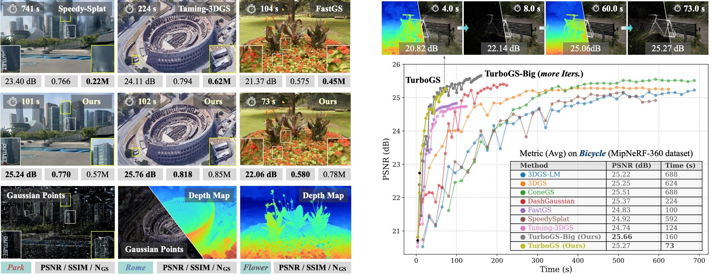
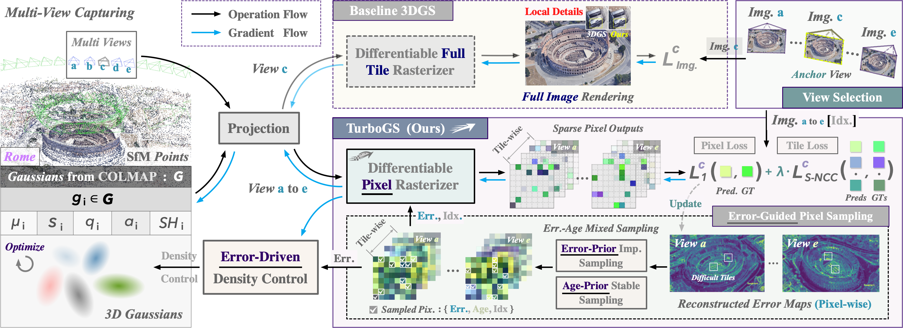
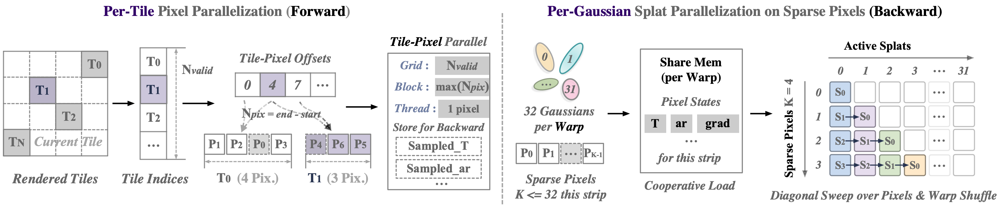
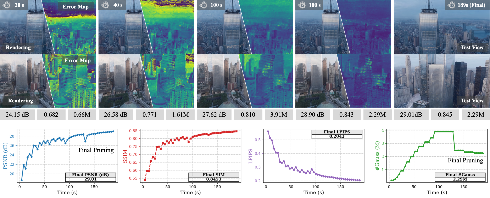

1 Zhejiang Sci-Tech University
2 Malanshan Audio & Video Laboratory
3 CAD & CG Laboratory, Zhejiang University
4 City University of Hong Kong
5 Hangzhou Dianzi University
† Corresponding Authors

Consumer-level applications require fast optimization of 3D Gaussian Splatting (3DGS) with high-fidelity novel view rendering. However, existing 3DGS acceleration approaches still incur substantial computation on redundant pixels while sacrificing fine details. In this paper, we present TurboGS, an error-guided training framework that accelerates 3DGS by concentrating optimization on perceptually informative pixels. TurboGS is built upon four core components: (1) a tile-wise sparse pixel sampling, which, driven by multi-view reconstruction errors during training, prioritizes challenging regions and skips well-reconstructed ones to avoid redundant gradient computation; (2) a tile-wise structure-aware loss with sparse Normalized Cross-Correlation, which provides sparse yet effective supervision to preserve fine details and stabilize training; (3) an error-driven Gaussian density control strategy, which dynamically allocates model capacity and removes redundant primitives; and (4) a tailored hybrid optimizer that couples Hessian-informed updates with Adam moment damping to stabilize and improve convergence under sparse supervision. Experiments on standard benchmarks demonstrate that TurboGS can deliver on par or superior rendering quality within 100 seconds on a single RTX 5090 GPU card (up to ∼10× training speedup over vanilla 3DGS).

TurboGS framework overview. Unlike existing 3DGS (Kerbl et al., 2023 [3DGS]; Mallick et al., 2024 [TamingGS]; Ren et al., 2026 [FastGS]) methods that rasterize the entire tile in each iteration, TurboGS allocates more attention to pixels that are difficult to reconstruct and reduces gradient backpropagation in well-interpreted regions, thereby lowering the rasterization cost per iteration. To achieve this, TurboGS records multi-view pixel reconstruction errors and performs tile-wise sparse pixel sampling based on pixel error and age. Built upon this sparse sampling scheme, we further incorporate a local structure-aware loss (sparse NCC for pixel supervision) and error-driven density control to preserve fine details.

Pixel rasterization in TurboGS. Forward rasterization follows tile-parallel execution by organizing sampled pixels in tile order, while the backward pass adopts per-Gaussian splat parallelization to propagate gradients only over sparse sampled pixels

Pixelwise error maps, rendering results, and the curves over training (for an example on OMMO-10 data)
@inproceedings{dong2026turbogs,
title={TurboGS: Accelerating 3D Gaussian Splatting via Error-Guided Sparse Pixel Sampling and Optimization},
author={Dong, Zheng and Qiu, Daifei and Dai, Pinxuan and Xu, Ke and Xu, Jiamin
and He, Lili and Lau, Rynson WH and Xu, Weiwei},
booktitle={ICML},
year={2026},
}